Screenshot
允许 + 提醒
不再使用 Android FLAG_SECURE 阻止用户截屏；成功截屏后显示 6 秒安全横幅。
iOS Simulator 与 Android API 35 模拟器验收。测试覆盖 KT Wallet、KT Cold Signer， 包括允许截屏、截屏后安全提醒、助记词隐藏、系统面板行为以及真实后台任务卡保护。
不再使用 Android FLAG_SECURE 阻止用户截屏；成功截屏后显示 6 秒安全横幅。
系统回调到达后，助记词文字颜色与卡片背景一致，并在本次页面生命周期内持续隐藏。
通知栏/控制中心不再误触发；切换到其他 App 后，任务切换器只显示品牌保护页。
下拉通知栏或控制中心只会暂时失去焦点。App 内容由系统面板覆盖，但不会切换到 KT 保护页。
用户选中另一个 App / 回到 Home 后，原生品牌保护页成为任务快照内容。
用户再次点击任务卡，保护页自动退出，回到原 Flutter 页面，不改变既有 PIN / Face ID 锁定策略。
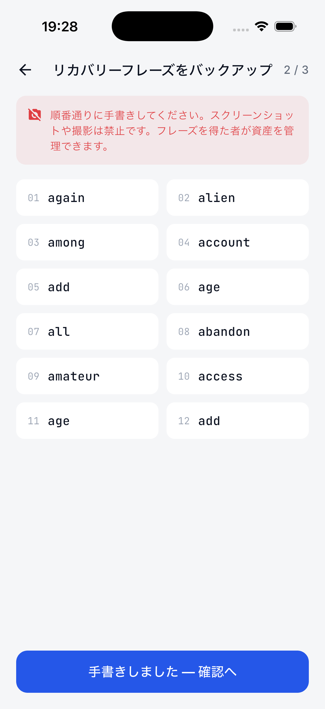
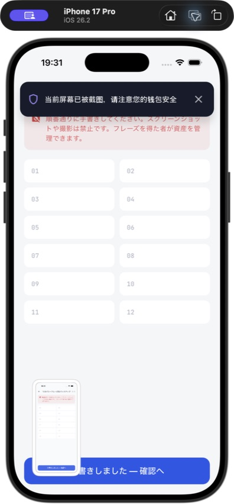
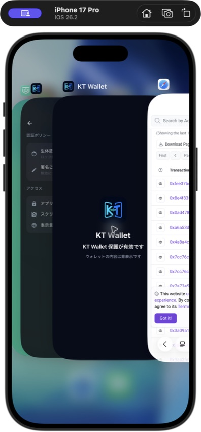
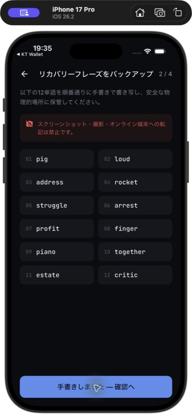
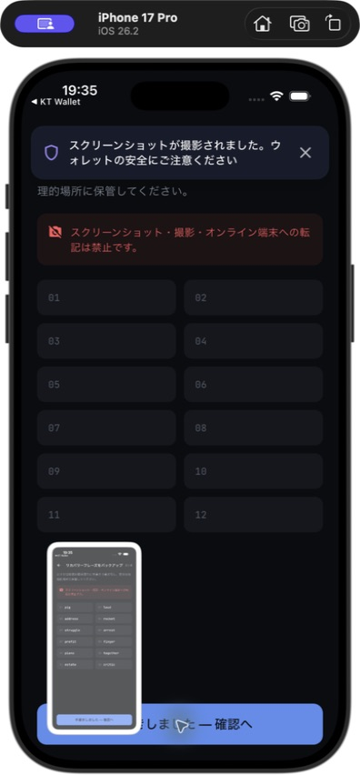
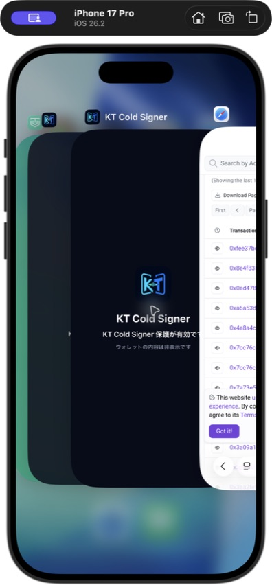
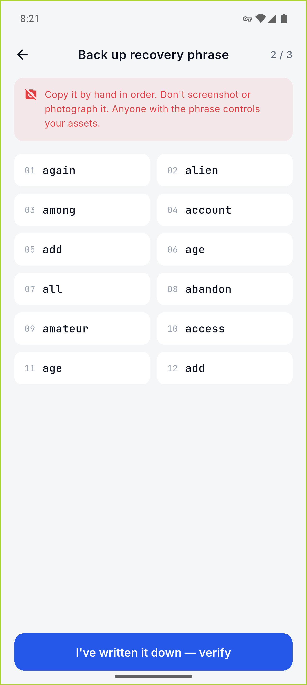
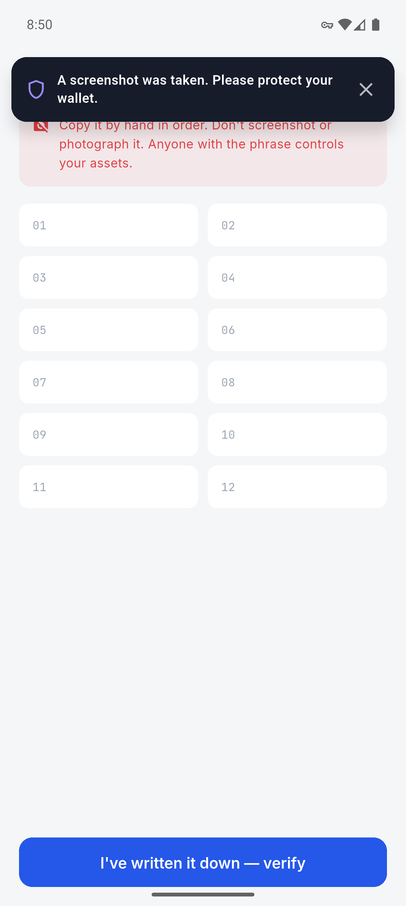
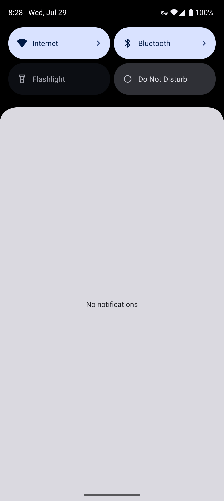
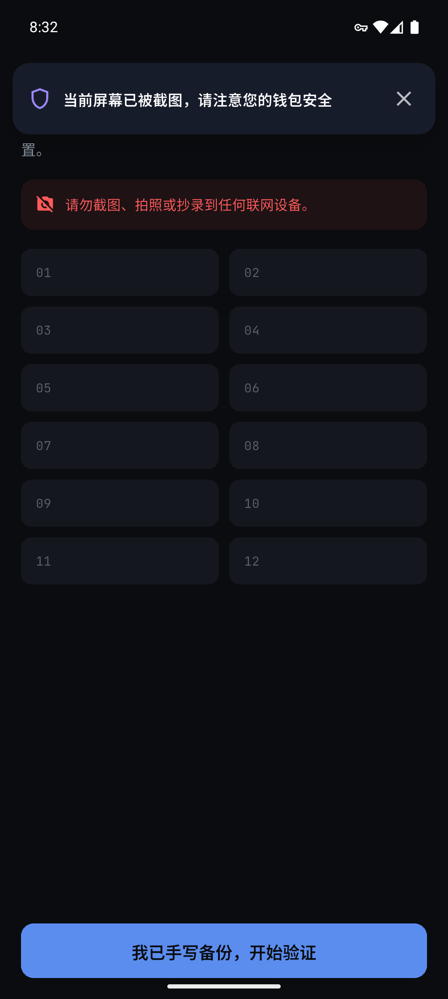
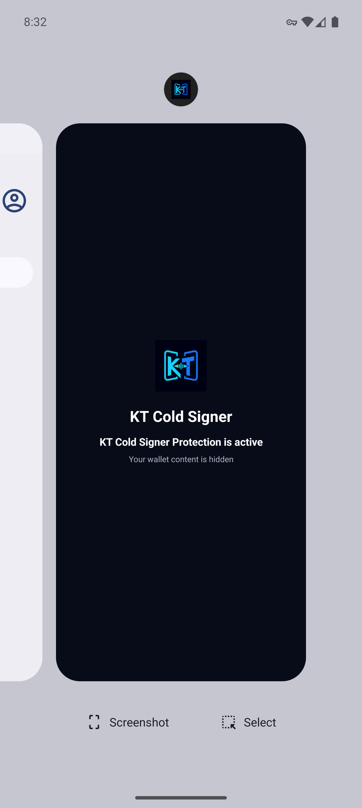
| 项目 | 平台 | 结果 | 验收说明 |
|---|---|---|---|
| 用户截屏 | iOS / Android | 通过 | 截屏保持可用，不再输出黑屏或阻止操作。 |
| 截屏安全横幅 | iOS / Android 14+ | 通过 | 显示 6 秒，可手动关闭；连续事件会重新计时。 |
| 助记词截屏后隐藏 | iOS / Android | 通过 | 回调后所有单词与背景同色，序号保留以说明页面状态。 |
| 通知栏 / 控制中心 | iOS / Android | 通过 | 只进入 inactive/失焦，不进入品牌保护页。 |
| 切换其他 App 后任务卡 | iOS / Android | 通过 | 仅品牌图标和“内容已隐藏”文案可见。 |
| 点击任务卡恢复 | Android | 通过 | PrivacyActivity 自动退出，MainActivity 恢复为 RESUMED。 |
| Widget / 回归测试 | 两个 App + ui_kit | 通过 | 详见下方构建与测试清单。 |
KT Wallet 全量 Flutter tests；KT Cold Signer 全量 Flutter tests；
ui_kit 屏幕安全测试；三个模块 flutter analyze；
两个 Android debug APK；两个 iOS Simulator debug build。
Android Pixel 9 Pro AVD / API 35；iPhone 17 Pro Simulator / iOS 26.2。 Android 无窗口模拟器未可靠触发系统截屏回调，因此用仅 Debug 编译可用的原生测试入口验证同一事件通道。
iOS 与 Android 的截屏通知都是“截图完成后”到达，无法回溯修改用户刚刚保存的那一张图片。 当前实现会在回调到达后立即隐藏助记词并提醒用户。Android 官方截屏检测仅适用于 API 34+； Android 13 及以下不使用 MediaStore 扫描或额外存储权限来伪装可靠检测能力。